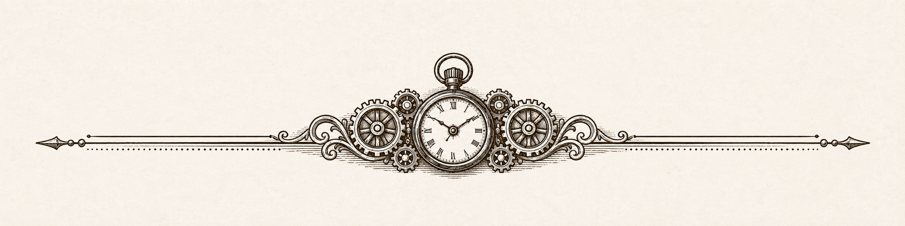

Family Curated • Vintage Watches • Clocks • Time Pieces • Local Markets
Watches Keep Life on Track
Established for collectors, gift-givers, and everyday wearers
Timepieces with character, history, and purpose.
Welcome to Time’s of the Essence, a simple storefront for watches, clocks, and time pieces selected for style, value, and everyday appeal.
Our inventory is a rotating mix of unique and well-designed pieces: decorative watches, fashionable finds, practical workplace options, and timepieces suited for recreation. Whatever type of piece you are considering, chances are John has found something that will intrigue your interest.
No online checkout here. This site is informational only. Reach out to John directly for availability, questions, market dates, or to ask about a specific style.

Our Story
Time’s of the Essence is a family-style time piece marketplace designed and promoted by John Hernandez, a longtime information professional who has fostered an affinity for watches and clocks over the years.
John personally scouts the inventory, chooses the pieces made available to customers, considers each item’s appeal and price point, oversees quality control, and readies the inventory for customer selection.
Some pieces are polished up, cleaned up, or gently spruced up so they can be enjoyed again. The focus is not on operating a repair counter; it is on finding distinctive pre-owned watches and clocks and giving them a thoughtful second life.
Browse the Kind of Pieces John Looks For
Vintage & Classic
Traditional watches and clocks with an old-school look, useful as gifts, keepsakes, or daily pieces.
Decorative
Eye-catching pieces for collectors, display shelves, mantels, offices, and conversation-starting décor.
Everyday Wear
Clean, practical watches suited for work, weekends, and anyone who wants a dependable style.
Find Us Locally
Aside from the online presence, John can often be found at local community outdoor markets, farmers’ markets, and civic events, where he displays watches, clocks, and time pieces for customers to browse and select.
Should you one day find John at a market in person, please come up and say hello. He is an engaging man with numerous interests, enjoys people, likes talking baseball, and comes complete with 101 conversation topics.
Contact John
Ask what is currently available, request a market schedule, or let John know the kind of watch or clock you are hoping to find.